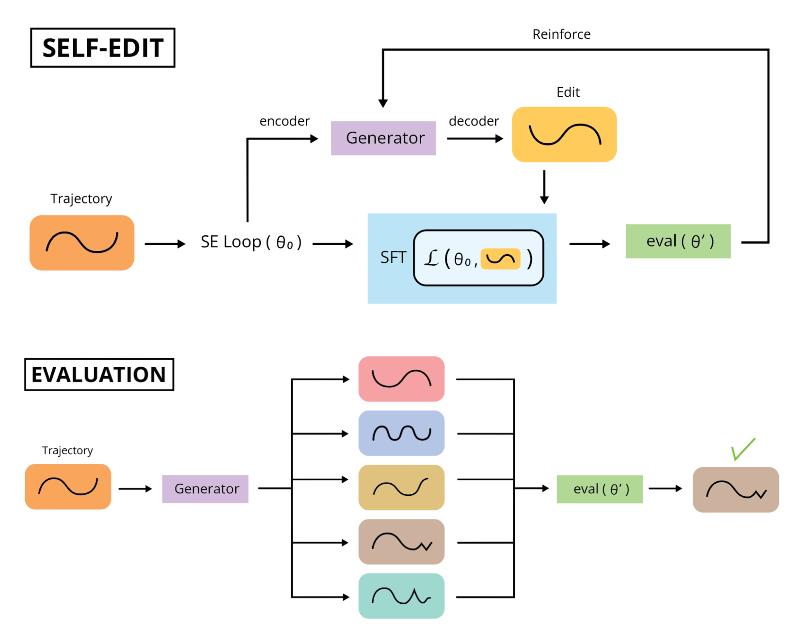
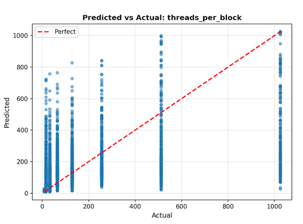
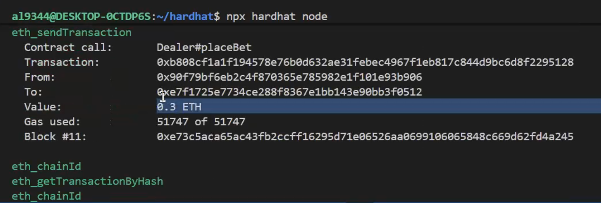
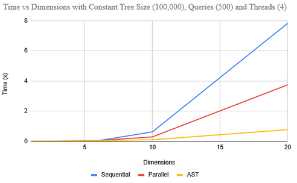

|
Alex Lee Current MSCS student at NYU Courant. Double major in Aerospace Engineering and Computer Science at Rutgers University. OK competency in a variety of technical subjects (to varying degrees of OK). Email / Github / Personal Work |

|
Publications |

|
LGMCTS: Language-Guided Monte-Carlo Tree Search for Executable Semantic Object Rearrangement
Haonan Chang, Kai Gao, Kowndinya Boyalakuntla, Alex Lee, Baichuan Huang, Eric Jing, Jingjin Yu Abdeslam Boularias IROS, 2024 [project page] / [arXiv] A framework that combines language guidance with informed sampling distributions to rearrange objects into geometric patterns from natural language descriptions. |
Research |
|
 |
SERA: Self-Editing Robotic Adaptation
Alex Lee, Arman Keshavarz, Sherry Yang [project pdf download] An algorithm that lets a robot recover from failures by learning to generate reward-guided hyperparameter edits that rewrite failed trajectories into synthetic successes, enabling offline self-adaptation beyond the original expert policy. |

|
Development of Python Code for the Analysis of Flapping Flight of Insects
Alex Lee, Isaiah Pajaro, Jean Paul Nguyen, Mitsunori (Mitch) Denda J.J. Slade Symposium, 2024 [project page] A vortex approach for simulation of flapping wings in 3D for studying insect flight. Primarily analysis of flapping variables and consequences of compounding vortices. |

|
MR-Bench: Memory and Reasoning Benchmark for Long-horizon, Non-Markov Manipulation Tasks
Haonan Chang, Xinyu Zhang, Alex Lee, Shijie Geng, Abdeslam Boularias A manipulation benchmark featuring memory and reasoning dependent tasks. |

|
RATS-M: Reality Augmented Simulation for manipulation
Haonan Chang, Harish Udhaya Kumar, Alex Lee, Abdeslam Boularias A tool used for collect data to train dexterous manipulation policy. |
Other Misc. Projects |
|
 |
GPU Grid/Block Optimizer
Alex Lee, Arman Kezhavarz, Mohamed Zahran [project pdf download] A system that classifies CUDA kernels and uses machine learning to predict efficient GPU thread and block configurations from kernel features, problem size, and hardware characteristics |
|
 |
Zero Knowledge Poker
Alex Lee [project page] A zero-knowledge poker system that uses cryptographic proofs to ensure fair dealing and rule enforcement without revealing players’ private cards. |
|
 |
Adaptive Subspace Technique Flat KD-Trees
Alex Lee, Mohamed Zahran [project pdf download] [project slides download] A parallel, projection-based KD-tree that leverages multicore execution to enable fast, scalable k-NN and range queries on large, high-dimensional datasets. |

|
Autonomous Fleet Collaboration for Unknown Territory Exploration
Handell Quiros, Daniel Bainbridge, Alex Lee, Paolo Virtudazo, Yunuz Tozlu, Ryan Walton, Dr. Qingze Zou [project demo 1] / [project demo 2] / [project demo 3] Senior design project for controlling a fleet of rovers through communication with a drone. The drone is controlled with a Navio2 autopilot attachment and sends the updated path to Arduino boards on the rover. |

|
Custom Conversational AI
Alex Lee [project demo] A conversational AI in Unity using a custom Daz3D model and Mixamo animations, integrated speech recognition with Whisper and TTS using the Jets model. Ran locally on 8B Llama. |